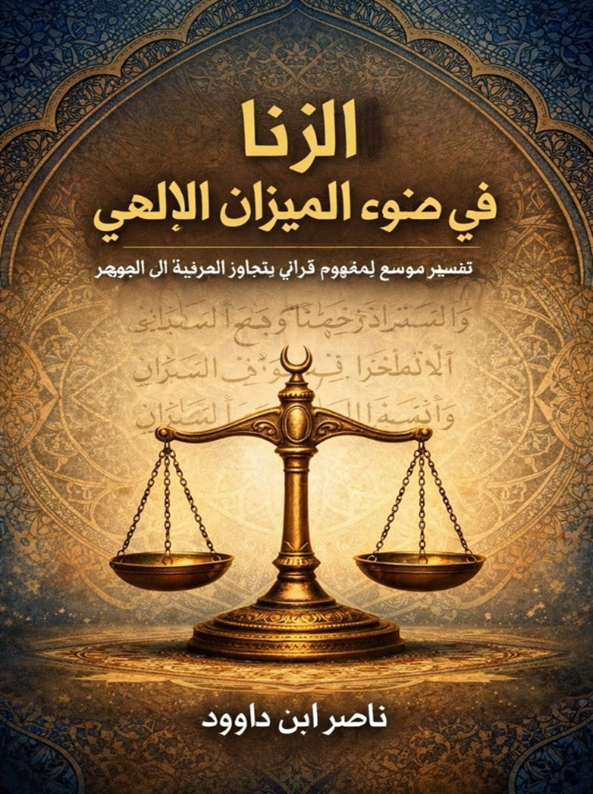

Important Translation Notice
This English edition is a condensed conceptual and semantic translation.
For the complete Arabic version with detailed discussions, expanded references, and comprehensive analysis (over 150 pages), please download the original Arabic book from our library.
You can use instant translation tools for real-time translation of the complete Arabic text.
📚 Download Complete Arabic Version (150+ pages)This English version provides the conceptual framework and main arguments in accessible language.
Translation Information
This English edition is a condensed conceptual adaptation. It presents the core ideas and philosophical framework in accessible language, but does not include all the detailed discussions, linguistic analyses, and expanded references found in the original Arabic work.
For researchers and serious readers: We recommend downloading the complete Arabic version (over 150 pages) and using translation tools for a comprehensive understanding. The Arabic version includes:
- Complete linguistic analysis of Quranic terms
- Detailed exegesis of all relevant verses
- Expanded discussions and references
- Comprehensive bibliography and footnotes
Preface – A Word to the Western Reader
This book is not about controlling bodies, nor about policing desire. It is about something far more fundamental: the loss of balance between desire and meaning.
In many modern societies, sexual freedom is framed as a personal right, detached from metaphysics, ethics, or long-term responsibility. The act is isolated, reduced to consent and pleasure, while its deeper consequences—relational, psychological, and civilizational—remain largely unexamined.
The Qur'anic perspective does not begin with prohibition. It begins with balance (al-Mīzān)—a universal principle governing nature, human relationships, and moral order. Within this framework, sexuality is neither demonized nor absolutized. It is understood as a powerful energy that must be integrated into a meaningful structure, not left to roam without orientation.
The concept commonly translated as adultery (zinā) is often misunderstood. In this book, it is not treated as a mere legal offense, but as a symptom of disconnection: a rupture between desire and responsibility, pleasure and trust, the individual and the larger human narrative.
About This Book
The concept of adultery (zina) is among the most sensitive and challenging in contemporary Islamic consciousness. This is true not only regarding its legal ruling but also concerning its semantic structure, ethical function, and position within the Quran's comprehensive value system.
This book proposes a two-level, complementary reading of adultery:
- The Definitive, Legal Level: Adultery as a prohibited sexual transgression with severe social and ethical consequences.
- The Expansive, Structural Level: Adultery as the ultimate manifestation of a deliberate disruption in the divinely ordained system of human exchange and relationship.
This expansive reading does not linguistically label every injustice as "adultery," nor does it equate them in legal penalty. Its goal is to understand the deep Quranic rationale that makes sexual adultery a major crime: it is an assault on the "balance of relationship" itself, not merely an isolated formal violation.
Key Features
- Comprehensive analysis of adultery (zina) in Quranic context
- Exploration of the concept of Divine Balance (al-Mīzān)
- Expansive interpretation beyond literal legal prohibition
- Examination of psychological, social, and civilizational dimensions
- Contemporary relevance for modern ethical discussions
- Bridges traditional Islamic scholarship with modern philosophical inquiry
- Accessible language for both academic and general readers
- Note: This is a condensed conceptual translation of the complete Arabic work
Table of Contents
Book Summary
Chapter 1: The Principle of Balance (Al-Mīzān)
The Qur'an introduces the universe not as a random accident, nor as a battlefield of competing forces, but as a balanced system. This balance—referred to as al-Mīzān—is not limited to physical laws. It extends into ethics, relationships, and human responsibility.
Balance, in this sense, is not equality. It is proportion. Every force has a place, every desire a context, every freedom a direction. When balance is respected, systems remain coherent. When it is violated, corruption does not appear immediately as chaos—it appears first as misalignment.
Chapter 2: Sexuality Beyond Biology
In contemporary discourse, sexuality is often reduced to biology and consent. Desire is framed as an instinct, and fulfillment as a private transaction. While this framework appears liberating, it overlooks a critical dimension: meaning.
The Qur'anic worldview does not deny desire. On the contrary, it recognizes it as a potent force—one capable of building life or dissolving it. Desire is not dangerous because it exists, but because it can detach from responsibility.
Chapter 3: When the Act Detaches from Meaning
Every civilization draws invisible lines between acts that build continuity and acts that dissolve it. These lines are rarely arbitrary. They emerge from long observation of what preserves coherence and what erodes it from within.
When an act is severed from its meaning, it does not become neutral—it becomes unstable. Sexual intimacy, when isolated from commitment and narrative, shifts from being a connective force to a transactional one.
Chapter 4: Trust, Covenant, and Human Bonds
Trust is the invisible infrastructure of every stable society. It cannot be legislated into existence, nor can it survive repeated erosion. Sexual relationships, more than any other human interaction, test the durability of trust.
In the Qur'anic vision, intimacy is placed within a covenantal structure. Marriage is not sanctified for its form, but for its function: it transforms desire into responsibility and passion into continuity.
Chapter 5: The Collapse of Lineage and the Loss of Narrative
Every society tells a story about itself. This story is not written only in books, but in names, families, and lines of descent. Lineage is not merely biological—it is narrative continuity.
The Qur'anic concern with lineage is often misunderstood as obsession with blood. In reality, it is concern with meaningful transmission: identity, responsibility, and belonging.
Chapter 6: Modern Freedom and the Illusion of Choice
Freedom, in modern discourse, is often defined as the absence of limits. The more options available, the freer the individual is assumed to be. Yet abundance of choice does not guarantee clarity of direction.
In the realm of sexuality, this illusion becomes visible. Endless options weaken commitment. The possibility of replacement undermines the motivation to repair. Desire becomes restless, constantly recalibrated.
Chapter 7: Quranic Logic vs. Moral Surveillance
One of the most persistent misunderstandings about Islamic ethics is the assumption that it is built on surveillance and punishment. The Qur'anic logic is the opposite.
The Qur'an minimizes exposure, discourages suspicion, and places a high evidentiary barrier before any legal action. Why? Because its primary concern is moral health, not public spectacle.
Chapter 8: Restoring the Balance
The solution proposed by the Qur'an is not repression, nor is it indulgence. It is realignment.
Restoring balance means reconnecting desire with meaning, freedom with responsibility, and intimacy with trust. It requires cultural shifts, not merely legal ones.
Conclusion: Beyond Prohibition: Toward Human Stewardship
This book has not argued for moral superiority, nor for cultural nostalgia. It has argued for coherence.
Zinā, in the Qur'anic worldview, is not a private failure. It is a signal that balance has been disturbed. Addressing it requires more than rules—it requires restoring meaning.
Human beings are not merely consumers of pleasure. They are stewards of continuity. When desire is guided by meaning, it builds life. When it is severed from it, it quietly unravels what took generations to form.
Expansive Interpretation Section
The book continues with an expansive interpretation section that includes detailed linguistic analysis of the concept of "zina" in the Quranic context, exploring various dimensions including:
- Linguistic roots of "zina" and connection to Divine Balance
- Psychological and intellectual dimensions of adultery
- Detailed exegesis of relevant Quranic verses
- Symbolism of punishments and social reform
- Path to salvation through upholding balance
This comprehensive analysis moves beyond literal interpretation to understand the essence of the concept within the Quranic ethical framework.
About the Author
Nasser Ibn Dawood is an Islamic researcher and engineer specializing in digital Quranic studies. His work focuses on bridging traditional Islamic scholarship with contemporary linguistic and philosophical analysis, making classical Islamic concepts accessible and relevant to modern readers across cultural boundaries.
All his works are available under Creative Commons licenses at: https://nasserhabitat.github.io/nasser-books/